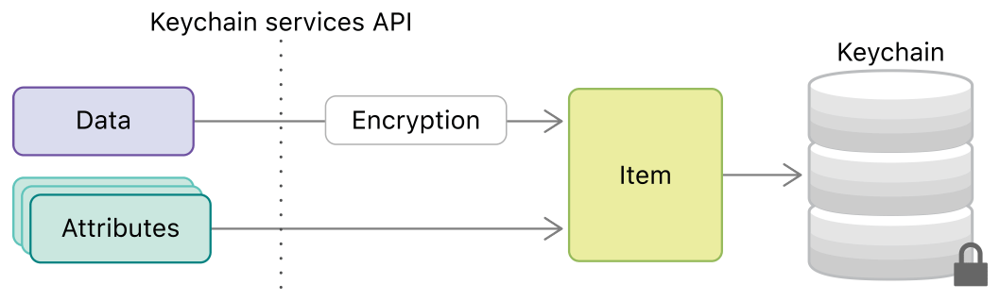

10 tháng 01 năm 2020.
Bảo mật ứng dụng là một trong những khía cạnh quan trọng nhất của phát triển phần mềm. Người dùng ứng dụng của chúng tôi hy vọng rằng những mẩu thông tin của họ đang được giữ kín. Dữ liệu ứng dụng nhạy cảm của chúng tôi không nên được cho đi.
Tôi đã nghiên cứu nhiều ứng dụng từ AppStore và rất nhiều trong số chúng đang mắc lỗi tương tự, lưu trữ dữ liệu nhạy cảm ở những nơi chúng không thuộc về.
Nếu bạn đang lưu trữ dữ liệu nhạy cảm trong UserDefaults, thì bạn đang mạo hiểm thông tin của ứng dụng.
UserDefaults được lưu trữ đơn giản dưới dạng tệp danh sách thuộc tính được đặt trong thư mục Tùy chọn của ứng dụng. Chúng được lưu trong ứng dụng mà không bị mã hoá dưới mọi hình thức.
Về cơ bản, bằng cách sử dụng ứng dụng mac của bên thứ ba như iMazed chẳng hạn, thậm chí không cần phải Bẻ khóa thiết bị, bạn có thể dễ dàng xem dữ liệu UserDefaults cho bất kỳ ứng dụng nào được tải xuống từ AppStore.
Các ứng dụng mac này được thiết kế đơn giản để cho phép bạn khám phá và quản lý các tệp ứng dụng của bên thứ ba có trên iPhone.
Lý do thúc đẩy tôi viết bài viết này là tôi phát hiện ra rằng rất nhiều ứng dụng mà tôi đã cài đặt từ AppStore viết dữ liệu nhạy cảm của họ trên UserDefault.
Ví dụ như Mã thông báo truy cập (Token), cờ đăng ký có thể tái tạo hoạt động, Số lượng tiền có sẵn, v.v.
Tất cả dữ liệu này có thể dễ dàng truy xuất và thay đổi và gây thiệt hại cho các ứng dụng, từ việc sử dụng miễn phí các tính năng phải trả tiền đến hack lớp mạng và nhiều hơn nữa.
Bạn nên luôn luôn ghi nhớ một điều khi lưu dữ liệu trên ứng dụng iOS, UserDefaults chỉ được thiết kế để lưu một lượng nhỏ dữ liệu như tùy chọn của người dùng bên trong ứng dụng, những thứ hoàn toàn không nhạy cảm.
Để lưu dữ liệu nhạy cảm với ứng dụng, chúng ta nên sử dụng các dịch vụ bảo mật do Apple cung cấp.
Keychain Service giúp bạn giải quyết những vấn đề này bằng cách cung cấp cho ứng dụng của bạn cách lưu trữ một lượng nhỏ dữ liệu người dùng trong cơ sở dữ liệu được mã hóa có tên là keychain.
Trong keychain, bạn có thể tự do lưu mật khẩu và các bí mật khác mà người dùng quan tâm, chẳng hạn như thông tin thẻ tín dụng hoặc thậm chí các ghi chú nhạy cảm ngắn.
Bạn cũng có thể lưu trữ các mục như khóa mật mã và chứng chỉ mà bạn quản lý bằng Certificate, Key, and Trust Services.

Dưới đây chúng tôi sẽ mô tả cách bạn có thể lưu mật khẩu của người dùng bên trong keychain:
class KeychainService {
func save(_ password: String, for account: String) {
let password = password.data(using: String.Encoding.utf8)!
let query: [String: Any] = [kSecClass as String: kSecClassGenericPassword,
kSecAttrAccount as String: account,
kSecValueData as String: password]
let status = SecItemAdd(query as CFDictionary, nil)
guard status == errSecSuccess else { return print("save error")
}
}
Phần từ điển truy vấn kSecClass: kSecClassGenericPassword chỉ ra rằng mục đó là mật khẩu, từ đó các dịch vụ keychain hiểu rằng dữ liệu yêu cầu mã hóa.
Sau đó, chúng tôi thêm mật khẩu mới vào móc khóa bằng cách gọi SecItemAdd với truy vấn chúng tôi đã tạo.
Lấy dữ liệu tương tự:
func retrivePassword(for account: String) -> String? {
let query: [String: Any] = [kSecClass as String: kSecClassGenericPassword,
kSecAttrAccount as String: account,
kSecMatchLimit as String: kSecMatchLimitOne,
kSecReturnData as String: kCFBooleanTrue]
var retrivedData: AnyObject? = nil
let _ = SecItemCopyMatching(query as CFDictionary, &retrivedData)
guard let data = retrivedData as? Data else {return nil}
return String(data: data, encoding: String.Encoding.utf8)
}
Chúng tôi có thể viết một bài kiểm tra đơn giản để đảm bảo rằng dữ liệu được lưu và truy xuất chính xác:
func testPaswordRetrive() {
let password = "123456"
let account = "User"
keyChainService.save(password, for: account)
XCTAssertEqual(keyChainService.retrivePassword(for: account), password)
}
Keychain API ban đầu có vẻ hơi phức tạp khi sử dụng nếu bạn phải lưu nhiều hơn một mật khẩu. Tôi khuyến khích bạn tạo mặt tiền cho nó để giúp bạn lưu và sửa đổi dữ liệu theo cách tốt nhất tùy thuộc vào trường hợp sử dụng ứng dụng của bạn.
Nếu bạn muốn biết thêm về mẫu mặt tiền và cách tạo các hàm bao đơn giản cho các hệ thống con phức tạp, thì bài viết này có thể giúp bạn rất nhiều.
Ngoài ra, có rất nhiều thư viện nguồn mở giúp việc sử dụng API Keychain đơn giản hơn. Một số trong số họ là SAMKeychain và SwiftKeychainWrapper.
Trong sự nghiệp là một nhà phát triển iOS, tôi đã thấy lỗi tương tự cứ lặp đi lặp lại. Rất nhiều lần Nhà phát triển lưu mật khẩu thô trên ứng dụng để sử dụng lại hoặc thực hiện các yêu cầu mạng đăng nhập trực tiếp bằng tên người dùng và mật khẩu. Nếu bạn đang lưu trữ mật khẩu trực tiếp trong UserDefault thì bạn nên biết bây giờ bạn đang gặp rủi ro bao nhiêu từ thông tin được cung cấp trong phần đầu tiên của bài viết này. Lưu mật khẩu vào Keychain giúp bảo mật ở mức tốt hơn nhưng sau đó, chúng ta nên luôn lưu mật khẩu và thông tin nhạy cảm khác vào keychain hoặc ở nơi khác bằng cách mã hóa chúng ban đầu. Hay để nói rằng kẻ tấn công có thể hack thông qua bảo mật keychain hoặc tấn công chúng tôi thông qua mạng của chúng tôi, từ đó anh ta có thể lấy mật khẩu của chúng tôi trực tiếp dưới dạng văn bản thô. Một cách tiếp cận tốt hơn là lưu trữ mật khẩu và sử dụng chúng cho các yêu cầu đăng nhập như một hàm băm được xây dựng cho mật khẩu này.
Việc tự thực hiện băm có thể rất phức tạp và quá mức cần thiết, vì vậy trong bài viết này, chúng tôi sẽ sử dụng sự trợ giúp của Thư viện CryptoSwift mã nguồn mở iOS.
CryptoSwift là một bộ sưu tập ngày càng tăng các thuật toán mã hóa tiêu chuẩn và an toàn được triển khai trong Swift.
Chúng ta hãy cố gắng lưu và lấy lại mật khẩu trên keychain bằng cách sử dụng các thuật toán được cung cấp trong CryptoSwift.
func saveEncryptedPassword(_ password: String, for account: String) {
let salt = Array("salty".utf8)
let key = try! HKDF(password: Array(password.utf8), salt: salt, variant: .sha256).calculate().toHexString()
keychainService.save(key, for: account)
}
Phương pháp này lấy một tài khoản và mật khẩu và lưu chuỗi băm trên Keychain thay vì chuỗi trực tiếp.
Hãy phá vỡ những gì đang xảy ra trong phương pháp này:
Chúng tôi tạo ra một loại salt để khiến việc tấn công chúng tôi khó khăn hơn. Nếu chúng tôi chỉ băm mật khẩu của mình, tin tặc có thể có một danh sách các mật khẩu được sử dụng nhiều nhất và tạo băm của chúng và so sánh chúng với mật khẩu đã tạo của chúng tôi. Và sau đó có thể dễ dàng tìm thấy mật khẩu của chúng tôi cho một tài khoản nhất định.
Bây giờ chúng tôi có thể xác thực với máy chủ bằng tài khoản và khóa tùy chỉnh của chúng tôi thay vì mật khẩu trực tiếp.
authManager.login(key, user)
Tất nhiên, ứng dụng và máy chủ nên chia sẻ cùng một loại salf. Sau đó, phần cuối sẽ phải so sánh các khóa giống nhau được tạo bằng cách sử dụng cùng một thuật toán để xác minh người dùng.
Bằng cách sử dụng phương pháp này, chúng tôi đưa bảo mật của chúng tôi lên một tầm cao mới và khiến việc tấn công ứng dụng của chúng tôi trở thành một nhiệm vụ cực kỳ phức tạp.